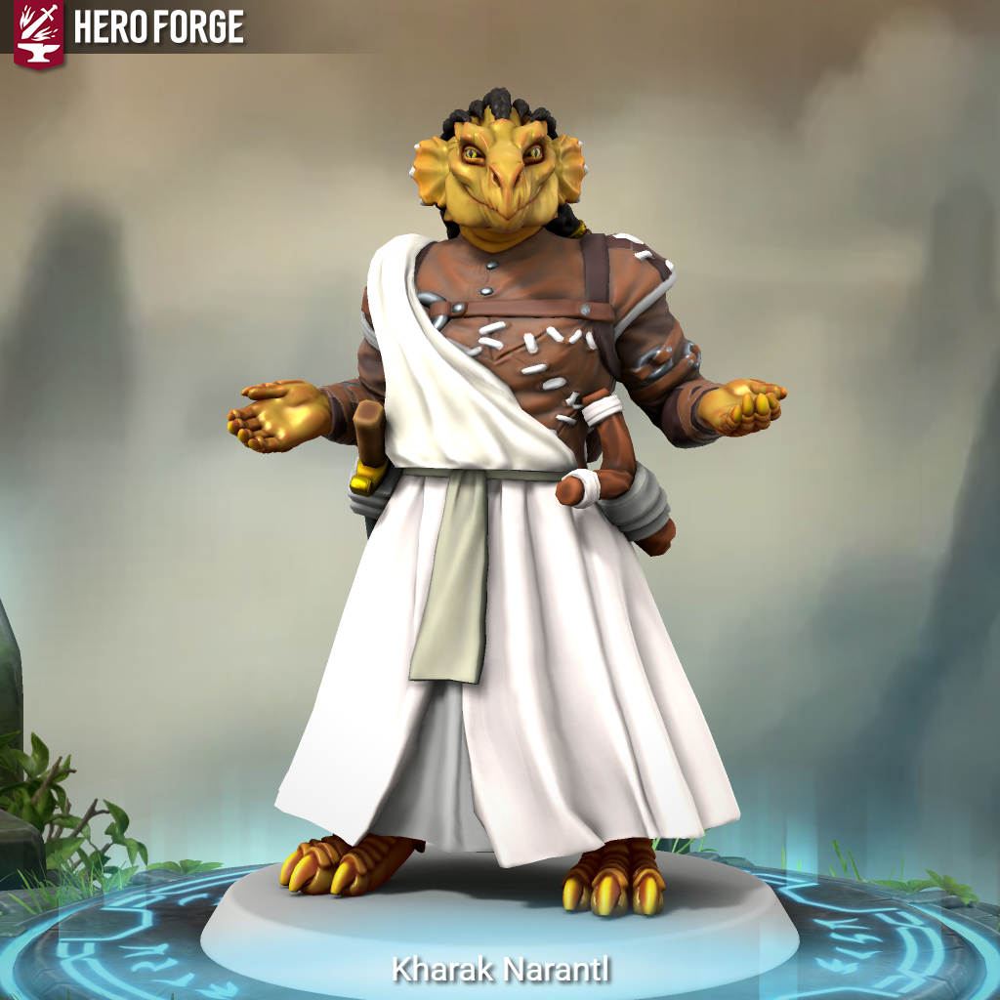

Kharak Narantl
Kharak putuje krajemi od města k městu a obdivuje místní kulturu a zároveň lid, který zde žije.
Kharaka nepřehlédnete. V davu ve Varce rozhodně vyčnívá, protože Drakorozené ve Varce neviděli už spoustu let a to z pochopitelných důvodů.
Tolik let, že zapomněli, co to vůbec drakorozený je. V současné době drakorození žijí jen na jihu, na velkých pláních, odkud Kharak po strastiplné minulosti přišel.
Dobrodružství, která prožil:
- Hledání ztraceného syna
- - Franci Jeszetovi se ztratil syn, boj s vlky
- Doprovod karavany
- - doprovod zboží do Garagoru, potkání Narmera a Neery
- Hledání Neery pt.1
- - Neeru někdo unesl, vyšetřování kdo jí unesl, Perlíkův moment boje, setkání s GGG a Alocou
- Hledání Neery pt.2
- - Neera se konečně dostala do Věže, kde družinu přivítal Raistlin a slíbil, že Neera se bude učit a bude mít ve Věži útočiště


Drakorozený Sorcerer